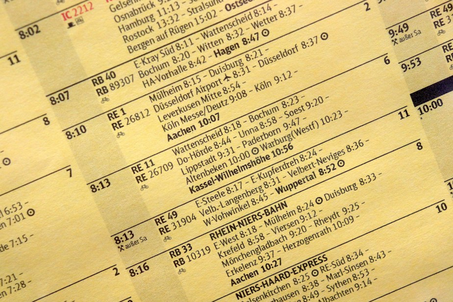
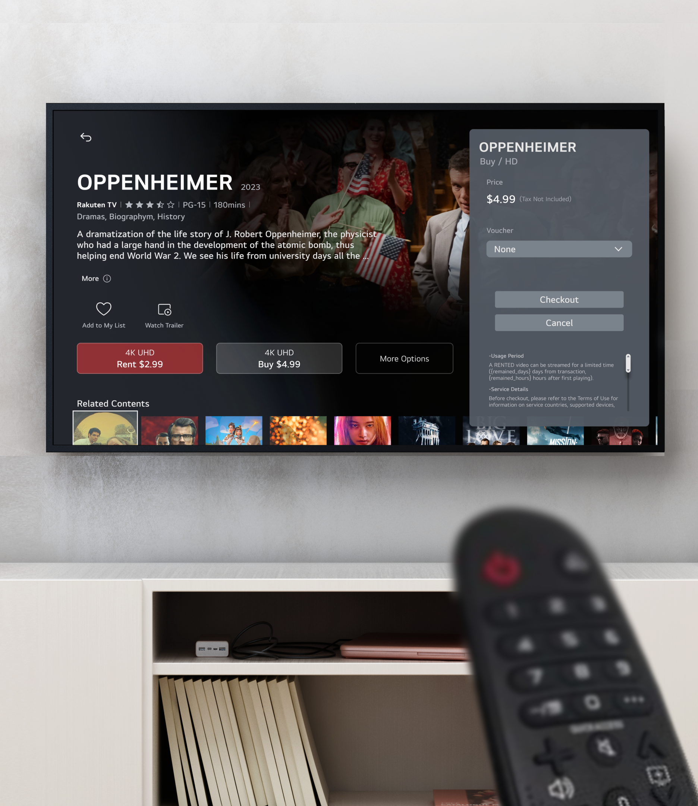
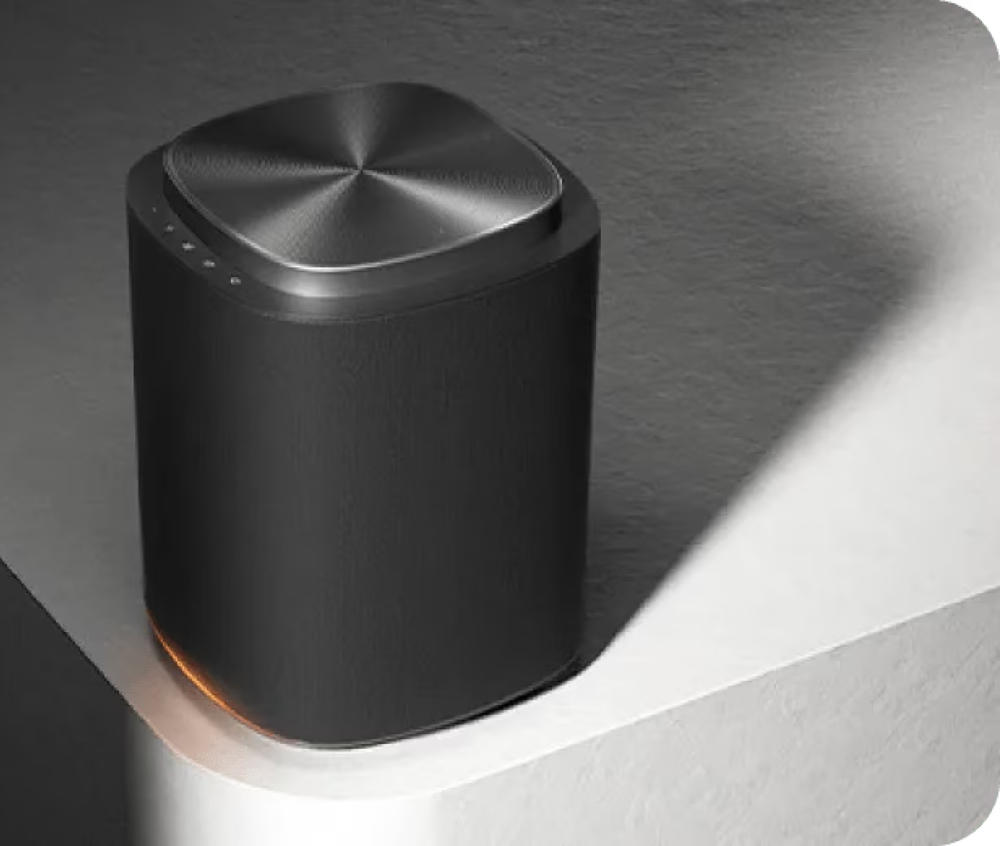

2026
LG전자 디자인경영센터 재직 중. 4년차
UX 디자인팀연구원
B2B 의료용 모니터 솔루션 담당
B2B 전자칠판 솔루션 담당
B2B 통합 콘솔 대시보드, 데이터, 인터널오피스 담당
고정인 · JUNG-IN KO
UX DESIGNER LG ELECTRONICS
의료용 모니터 B2B SaaS

스마트 TV 빌링, 페이

오디오 PUI

안녕하세요. 고정인입니다.
저는 최근 제조 대기업에서 B2B SaaS 프로덕트의 UX를 담당하고 있습니다.
작년까지는 B2C 하드웨어 제품을 자주 담당했었어요.
그 전에는 스타트업에서 웹 프로덕트를 관리했었습니다.
최근엔 직접 스타일가이드를 만들거나 하는 일이 적어졌지만
아직도 그래픽, 시각디자인, 인터랙션, 편집에도 관심이 많아요.
그래픽 개인작업은 이곳에 모아두었습니다!
KR Native · EN Advanced · JP Advanced · CN Intermediate
UX 디자인팀연구원
B2B 의료용 모니터 솔루션 담당
B2B 전자칠판 솔루션 담당
B2B 통합 콘솔 대시보드, 데이터, 인터널오피스 담당
UX 디자인팀연구원
게이밍 모니터 하드웨어 UX 담당
홈오디오 스피커 UX 담당
B2B 의료용 모니터 솔루션 담당
UX 디자인팀연구원
스마트 TV 계정 담당
스마트 TV 빌링 페이 담당
데이콘 재직프로덕트 디자이너
웹 프로덕트 유지 보수
웹 프로모션 이미지 제작
신규 교육 프로덕트 기획 및 UX
홍익대학교 졸업2018.03 ~ 2022.02
시각디자인 전공
경영학 부전공